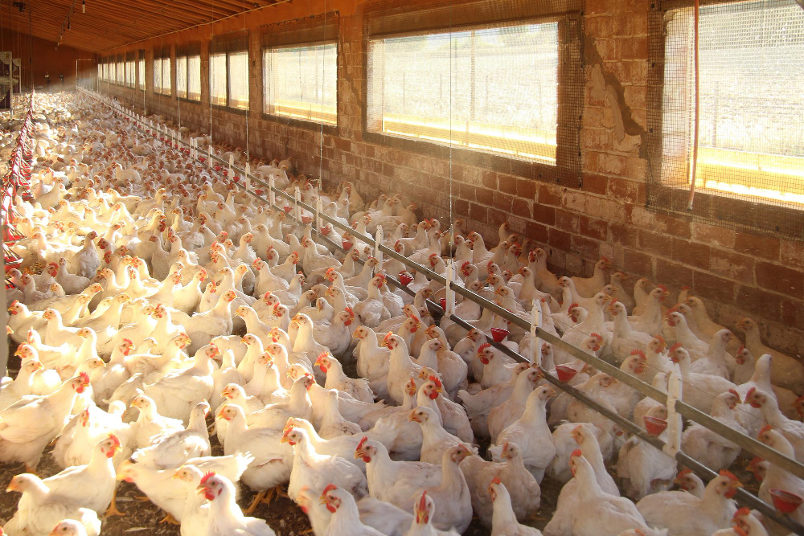
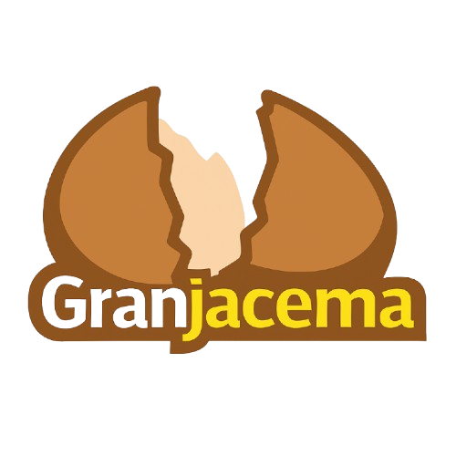
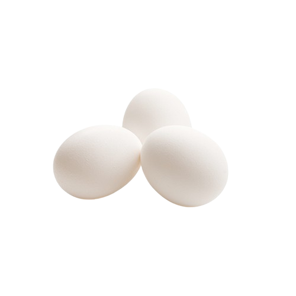
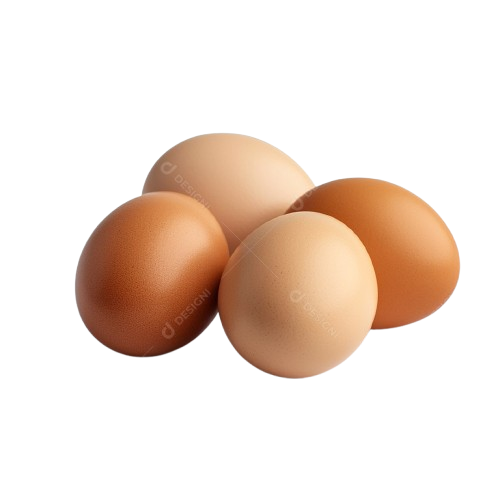
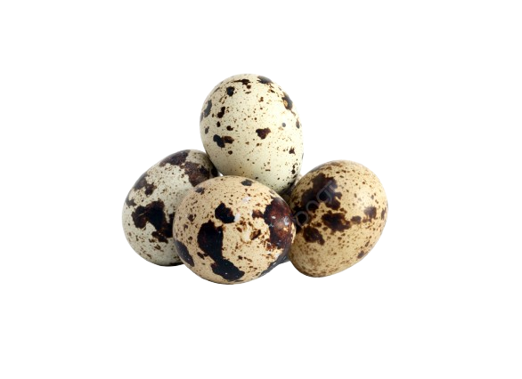

Unidade 01
Sítio do seu Valter
Localizada no sítio do seu Valter, contamos com mais de 600 galinhas nessa unidade.


GranjacemaProdução local • cuidado diário • sabor de verdade
Conheça a Granjacema, em São João de Iracema, com uma produção que une tradição, qualidade e um visual que dá orgulho de apresentar.
Nossa história
O surgimento da Granjacema teve início no ano de 1974, período em que a cidade ainda buscava expandir suas atividades produtivas além da agricultura tradicional. Foi nesse cenário que Jaiminho, morador da região e visionário para seu tempo, decidiu investir na criação de aves. Movido pelo desejo de oferecer uma nova alternativa econômica para a comunidade, ele começou de forma simples, com poucos galinheiros construídos no quintal de sua propriedade.
Estrutura
Unidade 01
Localizada no sítio do seu Valter, contamos com mais de 600 galinhas nessa unidade.

Unidade 02
Uma estrutura planejada para manter volume, cuidado e estabilidade na rotina de criação.

Linha de produtos
Vêm de galinhas criadas em sistema intensivo, garantindo maior padronização e disponibilidade. São a opção mais comum no mercado, ideais para o dia a dia e para receitas em geral.


Produzidos por galinhas criadas soltas, que se alimentam de forma mais natural. Têm gema mais alaranjada, sabor marcante e são muito valorizados por quem busca qualidade e tradição na alimentação.
Pequenos e nutritivos, são ricos em proteínas e minerais. Muito usados em saladas, aperitivos e pratos especiais, unem sabor delicado e praticidade.
